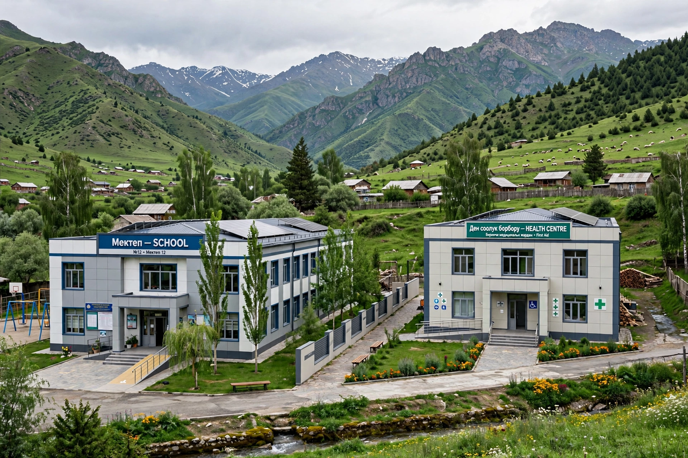

| Abbreviation | AKDN |
|---|---|
| Founder | Aga Khan IV |
| Type | Group of private, non-denominational development agencies |
| Area served | 30+ countries, esp. Africa and Asia |
| Staff | approx. 90,000 (majority in developing countries) |
The Aga Khan Development Network (AKDN) is a group of private, international, non-denominational development agencies founded by the Aga Khan, the Imam of the Nizari Ismaili Muslims. Its agencies work to improve living conditions and opportunities in the developing world, principally in sub-Saharan Africa, Central and South Asia, and the Middle East, employing some 90,000 people, most of them in the countries served.
The network's agencies include:
The AKDN describes its mandate as deriving from the Ismaili Imamat's ethical framework while serving people of all faiths. Its signature approach is long-term, multi-input area development: combining schools, clinics, water and sanitation, rural finance, and enterprise support in defined regions such as northern Pakistan, the Tajik Pamirs, and coastal Kenya, in partnership with governments and international donors.
From Wikipedia, the free encyclopedia. Recreated article.